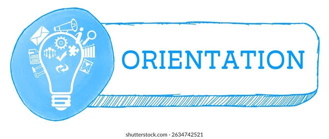
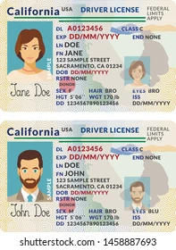
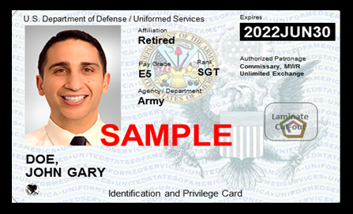
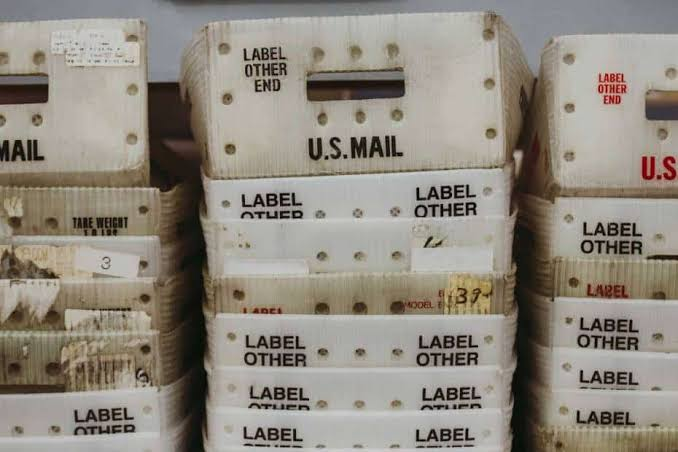

Feedback tracker
First Week on Station
Your first week in the UK will be a whirlwind of briefings, paperwork, and getting used to driving on the left side of the road! Here is a roadmap of what your first few days will look like:
Sponsor Check In
First Steps: Upon arriving, you will coordinate with your sponsor, who will help you settle into temporary lodging (such as the Liberty Lodge, Bldg 984) and guide you to your unit's squadron. In-Processing: Your sponsor will be the primary point of contact to officially check you into the unit and register you for the mandatory wing in-processing briefings.

Newcomer’s Orientation
The cornerstone of your first week is the Newcomers' Orientation, a highly coordinated, two-day event held weekly on Tuesday and Wednesday at Eagles' Landing (Bldg 958).
Who Attends: This briefing is mandatory for all active-duty military members, DoD civilians, and dependents are highly expected to attend alongside them. This serves as your official place of duty (meaning you should not schedule any personal appointments or house-hunting during these two days).
The Schedule: ○Tuesday: Focuses on core in-processing, finance briefings, processing travel vouchers, and medical/Tricare enrollment. ○Wednesday: Covers local area safety, cultural adaptation, and a dedicated spouse briefing in the afternoon. What to Bring (US Military personnel ONLY) Make sure to pack a folder with: ○At least 5 hard copies of your PCS orders. ○Dependent medical clearance forms (or screenshots from MyVector). ○All travel receipts (flights, lodging, tolls, taxi receipts) and your flight itinerary for your travel voucher.
○Your stateside driver's license. ○Military service records (such as your SURF or Career Data Brief) for reference.

Driving in the UK - Driver’s License
Driving in the UK is a major adjustment. Not only will you be navigating roundabouts on the left side of the road, but you must also hold a 3rd Air Force Driver's License to operate a vehicle on base and to buy tax-free fuel at base service stations.
●The Test: During the Newcomers' Orientation on Wednesday morning, you will receive a local road safety briefing followed immediately by the written 3rd AF driver's training exam.Dependents also attend the orientation and must take and pass the driving license test in the exact same way as active-duty members to drive legally on base.
●Fuel Requirements: Having your 3rd AF driving license is mandatory to be able to get gas/fuel on base.
●Preparation: It is highly recommended to study the UK Highway Code online before you arrive. You must hold a valid, non-provisional stateside driver's license to take the test.

DoD Civilian Benefits Verification
Before you head out to stock up on groceries or household items, you must verify your ID privileges: ●The Rule: In order for dependents or DoD civilians to have access to the Commissary and Base Exchange (AAFES), your CAC or Dependent ID card must explicitly have your logistical support benefits listed on them. If these benefits are not coded into your card, you will be turned away at the checkout or the entrance. ●Updating Your Card (DoD Civilians): Civilians must submit a DD Form 1172 to the MPF to get their CAC updated to reflect these benefits. ○If you are a civilian arriving not as a dependent: You will obtain this DD-1172 form from the Civilian Personnel Office (CPO), who will send it to your supervisor for signature before you take it to the MPF/Pass & ID desk (Bldg 977) to update your card.

Setting up Mail (APO)
One of your very first errands should be walking over to the Post Office (Bldg 1025). Bring a copy of your orders to set up your personal APO box so you can start receiving mail, online orders, and care packages from the US right away.

Submitted by Person Feedback ID Feedback description Priority Date submitted 00003 Add a short summary of the feedback Low Date
Step to reproduce
Expected behavior Describe what you would have expected to happen if this worked as it was meant to
Actual behavior What actually happened when you followed the steps. This is the reason this is a feedback or bug report Attachments, links, & screenshots File
Cause Impact Resolution Timeline for resolution Cause Impact Resolution Date Cause Impact Resolution Date Cause Impact Resolution Date
Assigned to Status Notes Person Open Notes
Keep this guide handy.
Download the PDF version for easy reference offline.